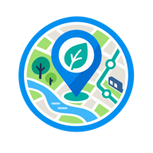

柏・流山周辺
ちーぶろマップ
地域ブログで紹介されたお店やスポットを、記事と一緒に楽しめる地図です。
地図を開く →
柏たなかマップログ
MAP COLLECTION
身近なまちの情報から、日本や世界を眺める地図まで。
柏・流山周辺
地域ブログで紹介されたお店やスポットを、記事と一緒に楽しめる地図です。
地図を開く →日本全国
交通事故発生箇所のオープンデータを地図上で確認できます。
地図を開く →
千葉県
チーバくんを地図に重ねて、千葉県内の場所を楽しく探せるウェブ地図です。
地図を開く →
柏市
保育施設や子育て施設の場所、施設情報などをまとめた地図です。
地図を開く →
柏市
2026年4月入園に向けた、保育園等の受入予定人数を確認できます。
地図を開く →
柏市
柏市内の緊急避難場所、避難所、広域避難場所を確認できる地図です。
地図を開く →
柏市
人口、都市計画、防災など、まちを知るための情報を重ねて見られます。
地図を開く →
柏市
柏市内に伝わる昔話を、ゆかりの場所とともにたどる地図です。
地図を開く →
柏市
昔と今の地図を見比べながら、柏市のまちの変化をたどれます。
地図を開く →Japan / English
Explore traffic accident locations across Japan in an English interface.
Open map →世界
世界の現地時刻、日の出・日の入り、昼夜の境界を地球上で眺められます。
地図を開く →つくば市
用途地域とPLATEAUの3D都市モデルを重ねて確認できる地図です。
地図を開く →ABOUT
柏たなかで暮らす管理人が、日々の生活で気になったことや、見つけたオープンデータをきっかけに地図を作っています。地図ごとに対象地域もテーマもさまざま。暮らしやまちを眺める小さなきっかけになればうれしいです。
CONTACT
地図についてのご意見やご感想など、お気軽にお寄せください。